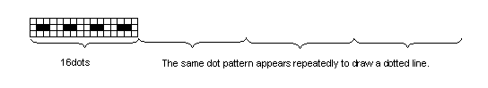

GOTO
FORMAT: GOTO line number
*label
See Also: GOSUB, ON...GOTO
PURPOSE:
Transfers program control to a specified line number or *label.
REMARKS:
GOTO transfers control from one location in a BASIC program to another location.
Unlike GOSUB, GOTO does not "remember" the location from which the transfer occurred.
Usually, a program is executed sequentially from the smallest line number. However,
execution can be transferred to the line with the given line number or *label.
The transfer destination is specified by entering the line number or *label after the GOTO
command.
EXAMPLE:
GOTO 40 Jumps to line 40
GOTO *AB Jumps to the line with label *AB
EXAMPLE:
10 WAIT
15 INPUT A$
20 IF A$ = "Y" GOTO 50
30 PRINT "NO"
40 GOTO 60
50 PRINT "YES"
60 END
This program prints "YES" if a "Y" is entered and prints "NO" if anything else is entered.
Return to Top
GPRINT
FORMAT: 1. GPRINT "string"
2. GPRINT expression [; expression; expression;...]
See Also: GCURSOR, PRINT
REMARKS:
Lowers the starting coordinates by one dot by expanding a letter string
or a value designated with the to the side by 8 dots (MSB
at left and LSB at right) including the starting coordinates designated
as GCURSOR (MSB position).
The letter string between double quotation marks is translated by
2-digit in hexadecimal number (1 byte). (In case of odd number of
digits, the last one is ignored.)
In case of a value instead of a letter string, it is designated by a
byte, or multiple designation is possible by dividing them with
semicolons (;).
The Y-coordinate of the starting coordinates is increased by 1 after
displaying 1 byte. If it results in the Y-coordinate to be outside the
screen, it is set as 0.
EXAMPLE:
GPRINT "F055AA0F"
or GPRINT &HF0;&H55;&HAA;&H0F
The coordinates designated with GPRINT
Printed as follows.
1 line F0h : 0000----
2 line 55h : -0-0-0-0
3 line AAh : 0-0-0-0-
4 line 0Fh : ----0000
Return to Top
GRAD
FORMAT: GRAD
See Also: DEGREE, RADIAN
PURPOSE:
Changes the form of angular values to gradient form.
REMARKS:
The device has three forms for representing angular values: decimal degrees, radians,
and gradient. These forms are used in specifying the arguments to the SIN, COS, and TAN
functions and in returning the results form the ASN, ACS, and ATN functions.
The GRAD function changes the form for all angular values to gradient form until DEGREE
or RADIAN is used. Gradient form represents angular measurement in terms of percent
gradient, i.e., a 45 degree angle is a 50 percent gradient.
At the beginning of a program the form of angular values to decimal degrees(DEGREE).
EXAMPLE:
10 WAIT
20 GRAND
30 X = ASN 1
40 PRINT X
X now has a value of 100, i.e., a 100 gradient, the arc sine of 1.
Return to Top
HEX$
FORMAT: HEX$ expression
PURPOSE:
Converts a decimal number into its hexadecimal character string equivalent.
REMARKS:
The value of the expression must be in the range of -9999999999 to 9999999999.
The resulting hexadecimal character string will be up to 10 digits long.
EXAMPLE:
C$ = HEX$ 12 + HEX$ 15
C$ is assigned the character string "CF".
Return to Top
INKEY$
FORMAT: INKEY$ INKEY$(1)
PURPOSE:
Gives the specified variable the value of the key pressed while the INKEY$ function is
executed.
REMARKS:
INKEY$ is used to respond to the pressing of individual keys without waiting for the enter
key to end the entry.
INKEY$(1) is used to save the battery by waiting for any key is pressed.
See the key code table for a list of applicable keys and the characters that are returned.
Do not use INKEY$ in statement directly. Please be sure to let it into the variable at first.
In the loop of INKEY$, program cannot be quit by ESC key. Please quit by using POWER
key. And do not enter 2nd keys for input.
We strongly recommend to use INKEY$(1) to save the battery.
EXAMPLE:
10 CLS
20 A$=INKEY$
30 IF A$="" THEN 20
40 B=ASC A$
50 IF B=0 THEN 20
60 WAIT
70 PRINT "INKEY$ code=";B
| 00h | 10h | 20h | 30h | 40h | 50h | 60 | 70 | 80 | 90 | A0 | B0 | C0 | D0 | E0 | F0 |
|---|
| 0 |
|
| SPACE | 0 |
| P |
|
|---|
| 1 |
|
|
| 1 | A | Q |
|
|---|
| 2 |
|
|
| 2 | B | R |
|
|---|
| 3 |
|
|
| 3 | C | S |
|
|---|
| 4 | UP KEY |
|
| 4 | D | T |
|
|---|
| 5 | DOWN KEY |
|
| 5 | E | U |
|
|---|
| 6 | PREV KEY |
|
| 6 | F | V |
|
|---|
| 7 | NEXT KEY |
|
| 7 | G | W |
|
|---|
| 8 |
|
|
| 8 | H | X |
|
|---|
| 9 | MENU |
|
| 9 | I | Y |
|
|---|
| A | ENTER |
|
|
| J | Z |
|
|---|
| B |
| ESC |
|
| K |
|
|
|---|
| C | DEL |
|
|
| L |
|
|
|---|
| D | Enter-Mark |
|
|
| M |
|
|
|---|
| E | RIGHT KEY | NEW |
|
| N |
|
|
|---|
| F | LEFT KEY | CATEGORY |
|
| O |
|
|
|---|
Return to Top
INPUT
FORMAT: 1.INPUT variable [, variable]
2. INPUT "prompt string", variable [,"prompt string", variable...]
3. INPUT "prompt string"; variable [,"prompt string"; variable...]
See Also: INKEY$, READ, LOCATE
PURPOSE:
Allows entry of one or more values from the keyboard.
REMARKS:
When you want to enter different values each time a program is run, use INPUT to enter
these values from the keyboard.
Format 1 displays symbol "?" to prompt data entry. If data is entered and the enter key is
pressed at this prompt, the system assigns the data to the variable and resumes program
execution.
If more than one variable is specified, the data prompt is repeated the corresponding
number of times.
When "?" is displayed, the data of pasted or symbols cannot be entered.
During data prompt, format 2 displays the character string enclosed by double quotes ("") as
entry guidance. The guidance disappears when data is entered.
When guidance is displayed, the data of pasted or symbols cannot be entered.
Format 3 also displays entry guidance during data prompt, but the entered data appears
following the entry guidance, which does not disappear.
The type of the variables given in the INPUT statement must match the type of input data.
Assign string data to string variables, and numerical data to numerical variables.
If the variable type is numeric, only the numeric part from the top is inputted to the variable.
If the start position is specified using the LOCATE statement before executing the INPUT
statement, the prompt string or ? will be displayed at the specified location.
Please use the POWER key to quit the INPUT command. ESC key will skip the INPUT
command only.
EXAMPLE
10 INPUT A
20 INPUT "A=";A
30 INPUT "A=",A
40 INPUT "X=?";X,"Y=?";Y
[10] Puts a question mark at the left margin.
[20] Displays "A=" and waits for data to be entered.
[30] Displays "A=". When data is entered, "A=" disappears and the data is displayed starting at the left
margin.
[40] Displays "X=?" and waits for the first entry. After enter is pressed. "Y=?" is displayed at the left margin.
Return to Top
LEFT$
FORMAT: LEFT$("string", expression)
See Also: MID$, RIGHT$
PURPOSE:
Returns the specified number of characters from the left end of a given string.
REMARKS:
LEFT$ returns the number of characters specified by the expression from the left end of the
given string.
For example, if A$="ABCD", LEFT$(A$,3) returns the leftmost 3 characters, "ABC".
EXAMPLE:
10 WAIT
20 X$="SHARP"
30 FOR N=1 TO 5
40 LET S$=LEFT$(X$,N)
50 PRINT S$
60 NEXT N
S
SH
SHA
SHAR
SHARP
Return to Top
LEN
FORMAT: LEN "string"
PURPOSE:
Returns the number of characters in a string.
REMARKS:
The number of characters in the string includes any blanks or non-printable characters such
as control codes or carriage returns.
EXAMPLE:
10 WAIT
20 INPUT"ENTER A WORD" ; A$
30 N=LEN A$
40 PRINT "THE WORD LENGTH IS" ; N
50 END
ENTER A WORD CHERRY
THE WORD LENGTH IS 6
[20] Prompts for a word. In this example, the user enters ÅgCHERRYÅh.
[30] Finds the length of the word.
[40] Prints out the answer.
Return to Top
LET
FORMAT: 1. LET numeric variable = expression
2. LET string variable = string
PURPOSE:
Used to assign a value to a variable.
REMARKS:
LET assigns the value of the expression to the designated variable. The type of the
expression must match that of the variable; i.e. only numeric expressions can be assigned
to numeric variables and only string expressions can be assigned to string variables.
The LET command may be omitted in all LET statements.
Do not omit the "LET" statement in IF statement.
EXAMPLE:
10 I=10
20 A=5*I
30 X$=STR$ A
40 IF I=10 THEN LET Y$=X$+".00"
[10] Assigns the value 10 to I.
[20] Assigns the value 50 to A.
[30] Assigns the value 50 to X$.
[40] Assigns the value 50.00 to Y$.
Return to Top
LINE
FORMAT: LINE [(expression 1, expression 2)]-(expression 3,expression 4)
[,[ S | R | X ]] [,expression 5] [,[ B | BF ]]
See Also: GCURSOR, PSET
PURPOSE:
Used to draw a line between two specified points.
REMARKS:
LINE is used to draw a line from the coordinates specified by (expression 1, expression 2) to
the coordinates specified by (expression 3, expression 4).
EXAMPLE:
LINE(0,0) - (238,69)
This statement draws a diagonal line from the upper left corner to lower right corner of the
screen.
The values of expressions 1 through 4 should be within the following range of values:
Expressions 1 and 3: 0 to 238
Expressions 2 and 4: 0 to 69
(Expression 1, expression 2) may be omitted. If omitted, a line is drawn from the origin (0,0)
or from the point specified by (expression 3, expression 4) used in a previous LINE
statement.
EXAMPLE:
10 CLS
20 LINE(10,0) - (238,16)
30 LINE - (100,31)
Note:
Since the screen is made up of a matrix of dots, a diagonal line may appear as a staircase,
and curves may not appear as complete curves.
Options S, R, and X are used to set, reset, or reverse the specified line on the screen.
S: Draws a line while activating the corresponding dots on the screen(set).
R: Draws a line while deactivating the corresponding dots on the screen (reset ).
This option is useful to draw a line in reverse video or to erase an existing line.
X: Draws a line, activating the corresponding dots if they are inactive, or deactivating the
corresponding dots if they are already active (reverse).
The default parameter is S.
Expression 5 is used to specify the type of line by a value from 0 to 65535.
For example,if the value of expression 5 is 26214(=&H6666),the following line is drawn:

Binary representation of 26214($H6666) is: 0110011001100110.
If you compare this bit pattern with the dot pattern above, you will notice that the dots
corresponding to "one" bits are activated while those corresponding to "zero" bits are not.
Thus, the type of line is determined by the binary 16-bit pattern of the value of expression 5.
If the value is zero, no line appears; and if it is 65535 (&HFFFF), a solid line is drawn. A solid
line is also drawn if expression 5 is omitted.
If option R is specified, the dots corresponding to "one" bits are deactivated on the screen; if
option X is specified, the status of the dots corresponding to "one" bits are reversed.
Options B and BF are used to draw a rectangle whose opposite corners are specified by
(expression 1, expression 2) and (expression 3, expression 4).
Option B is used to draw a line rectangle.
Option BF is used to draw a solid rectangle.
In some case, right end of line is not shown when line is 2 dots width.
EXAMPLE:
10 CLS
20 AA$ = "102812FD122810"
30 GCURSOR(64,20)
40 GPRINT AA$;AA$;AA$
50 LINE(24,0)-(124,31),&HF18F,B
60 LINE(34,3)-(114,28),X,BF
70 GOTO 60
Return to Top
LOCATE
FORMAT: LOCATE expression 1,expression 2
See Also: CLS, INPUT, PRINT, GCURSOR
PURPOSE:
Specifies the display start position.
REMARKS:
Specifies the display start position for the contents displayed by the PRINT command, etc.
The display position is specified as follows.
-Horizontal position (specified by expression 1)
-Vertical position (specified by expression 2)
A Position on the display is specified by its horizontal and vertical positions. Expression 1
specifies the horizontal graphic position, and expression 2 specifies the vertical character
position. The range of expression 1 is 0 to 238, and the range of expression 2 is 0 to 6. An
error occurs if the expressions are not specified within these ranges.
When a comma (,) or semi-colon (;) is not placed at the end of the statement (e.g.
PRINT"ABC"), the start position for the next display command moves to the horizontal
position of the next line.
EXAMPLE:
10 CLS
20 WAIT
30 LOCATE 20,1
40 PRINT"ABCDE"
Using the LOCATE command allows text to be written to any part of the display without
affecting existing text except where characters are directly overwritten. Use the CLS
command to clear the whole display.
If the number of characters exceed the limits of the display, the display is scrolled to show all
the characters, even if the display start position was specified with the LOCATE command.
Return to Top
MDF
FORMAT: MDF (expression)
See Also: USING
PURPOSE:
Rounds up the value of expression.
REMARKS:
The MDF function rounds the value of an expression to the number of decimal places
specified by the USING command.
MDF is effective only when the number of decimal places is specified for a value by the
USING command.
EXAMPLE:
10 WAIT
20 USING"###.###"
30 A = MDF(5/9)
40 PRINT A
50 USING
60 PRINT A, 5/9
70 END
0.556
0.556 5.55555E-01
Return to Top
MID$
FORMAT: MID$("string", expression 1 , expression 2)
See Also: LEFT$, RIGHT$
PURPOSE:
Return the characters starting from the position specified at expression 1 ,
for the numbers specified at expression 2.
REMARKS:
If the expression 1 is greater than the number of characters in the string,
a null string is returned.
If the expression 1 is less than 1, an error occurs. The expression 2 must be
in the range of 0 to 254 and the expression 1 in the range of 1 to 254.
Fractions will be rounded down.
EXAMPLE:
10 WAIT
20 Z$="ABCDEFG"
30 LET Y$=MID$(Z$,3,4)
40 PRINT Y$
CDEF
Return to Top
NOT
FORMAT: NOT expression
See Also: AND, OR, XOR
PURPOSE:
Takes a denial of the given value.
REMARKS:
* The values of denials in decimal numbers are as follows:
NOT 1=0
NOT 0=1
* Denials of the decimal numbers are converted into digital ones to
deny each digit and then the results are turned back to be in decimal
numbers.
Assuming that the decimal number for this case to be X, the relation
between the X and its denial (NOT X) is as below:
NOT X = -(X+1)
Therefore,
NOT 0=-1
NOT-1=0
NOT-2=1
Return to Top